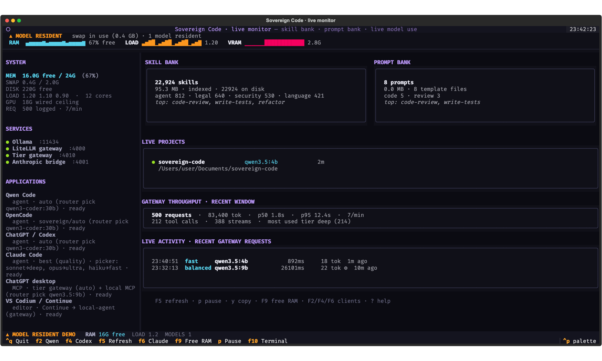
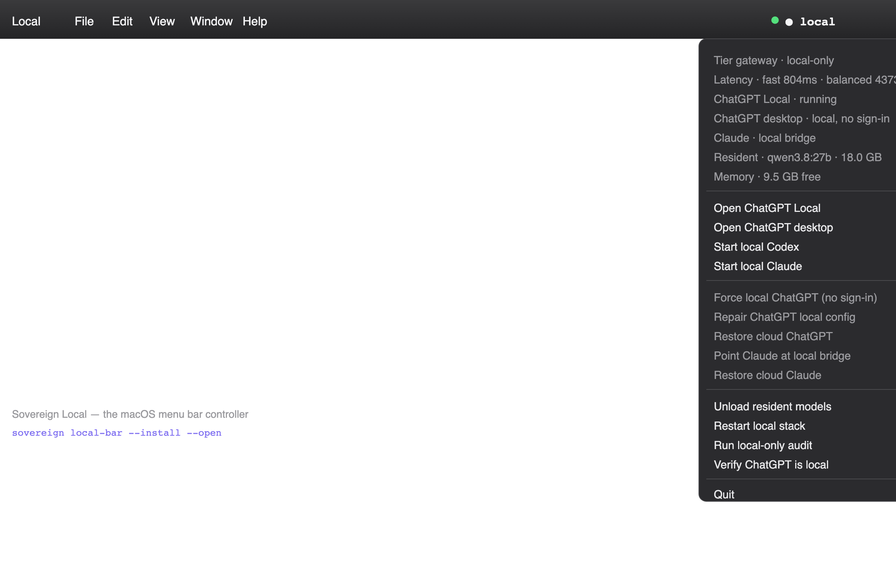
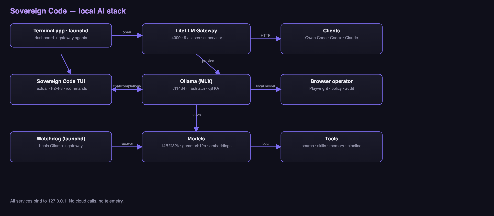

Your models. Your machine.
Your code.
One terminal dashboard and a tiered local gateway that put coding agents on your
Apple Silicon Mac — Codex, Claude Code, OpenCode, Qwen Code, and Continue, all
running against models you control. A plan → implement → verify → review
pipeline, a policy-checked browser, local PDF/OCR, semantic search, and offline
model stacks. No cloud by default, no telemetry, no account.
Buy now — €5
Instant download · card & Apple Pay · lifetime updates
22k+skill files
8task packs
840+tests
100%offline by default
MITopen source

The live terminal dashboard — skill and prompt banks, resident models, memory, gateway health, and a streaming chat prompt.

The Sovereign Local menu bar — live gateway, per-tier latency, resident model and free memory, plus one-click local/cloud switches.
Why it stands out
Tiered local gateway
An OpenAI-compatible endpoint plus an Anthropic bridge route each request to fast, balanced, deep, or ultra — with real streamed tool calls. An optional MLX server joins the same gateway.
Agents on your Mac
Codex, Claude Code, OpenCode, Qwen Code, and Continue edit files and run commands against local models. --cloud is the explicit escape hatch, and sovereign verify --clients proves a real turn through each.
22k-skill library
Route, lint, verify, and install curated skills into every client — plus project-level AGENTS.md, CLAUDE.md, and QWEN.md indexes.
Task packs
Pentest, vulnerability, risk, vendor, legal, compliance, forensics, and finance — each with guardrails, steps, matching skills, and deliverables.
Compliant browser operator
Playwright drives a visible Chromium. No CAPTCHA solving, secret fields are refused, destructive actions ask first, and every run is audited.
PDF, OCR, and vision
Read born-digital PDFs fast, OCR scanned pages locally, render figures, and ask a local vision model — sovereign pdf report.pdf.
Hugging Face, built in
Search models and datasets, download only the files you need, and import a GGUF straight into Ollama. Shared token and cache with the standard Hub tools.
Search and memory
Embed a repo and ask “where is X handled?”; project memory and agent briefs are injected into chat, code, and pipeline runs automatically.
Offline model stacks
lean, balanced, capable, and max presets pull exactly what fits your Mac. Any Ollama tag or MLX model also works.
Works with the tools you already use
Supported clients and their local agent paths
| Client | Local agent | How |
|---|
| Codex CLI / ChatGPT desktop | Yes | tier gateway /v1/responses; no OpenAI sign-in |
| Claude Code | Yes | local Anthropic bridge on :4001 |
| Claude Desktop | via MCP | the same sovereign tools over MCP |
| OpenCode | Yes | custom local/ provider plus the sovereign MCP server |
| Qwen Code | Yes | verified agent model through the local gateway |
| VS Codium + Continue | chat / edit / autocomplete | OpenAI-compatible models and local embeddings |
One command — sovereign install-clients — writes the wrappers, client configs, MCP server, and skills.
How it works
1Install
One script bootstraps the venv, links sovereign to your PATH, wires the clients, and installs the login dashboard.
2Pull models
sovereign setup-stack lean grabs a coder, a tiny chat model, and embeddings; use capable for the best local coder. Any Ollama tag or Hugging Face GGUF also works.
3Add a client
sovereign install-clients re-wires Codex, Claude Code, OpenCode, Qwen, and Continue whenever you install or upgrade one.
4Code
sovereign launch codex ~/src/app or sovereign chat-web --open. Everything stays on loopback unless you opt into cloud.
Routing, without choosing a model
Ask for best or auto and the tier gateway classifies the request. Any installed model can still be named explicitly.
Tier gateway routing table
| Tier | Model | Context | Used for |
|---|
fast | qwen3.5:4b | 8k | short questions, simple edits, autocomplete |
balanced | qwen3.5:9b | 65k | tool use, multi-turn work, medium prompts |
deep | qwen3-coder:30b · glm-4.7-flash | 32k | code, analysis, long or complex prompts |
ultra | qwen3.8:27b | 16k | hardest reasoning, only when requested |
best / auto | quality-first / latency-first | 32k | the stable aliases clients ask for |
Offline stacks
Offline model stack sizes
| Stack | Approx. total | Fit |
|---|
lean | ~8 GB | fast chat, a coder, embeddings |
balanced | ~21 GB | strong tool-caller + fast chat |
capable | ~33 GB | best coder, fast chat, tiny helper |
max | ~51 GB | full set; the large models run one at a time |
What a session looks like
Start an agent
sovereign launch codex ~/src/app
Codex, Claude Code, OpenCode, and Qwen all get the same local routing.
Plan, build, review
sovereign pipeline "add retries" \
--dir ~/src/app --yes
Plan, implement, verify with the project's checks, then review.
Work a domain
sovereign pack brief pentest \
--brief ~/src/app/AGENTS.md
Guardrails, SCOPE.md, matching skills, and model suggestions.
Find a model
sovereign hf search "qwen coder" \
--gguf --license apache-2.0
Search the Hub, then import a GGUF straight into Ollama.
Read a document
sovereign pdf report.pdf ocr
Text, OCR, tables, figures, and local vision review.
Drive a browser
sovereign browse URL \
--task "find the pricing table"
A visible Chromium, one policy-checked action at a time.
Under the hood

Terminal dashboard → router → tier gateway on 127.0.0.1:4010 → Ollama, MLX, and the LiteLLM gateway on :4000 → your clients. Model selection is memory-aware and the local-only guard is on by default.
Sovereign Code vs. cloud AI
Sovereign Code compared with cloud AI
| Dimension | Sovereign Code | Cloud (ChatGPT / Codex / Claude) |
|---|
| Your code | Stays on-device by default | Sent to servers |
| Cost | One-time €5 + free models | Monthly subscription |
| Works offline | Yes | No |
| Models | Yours — Ollama, MLX, or any GGUF | Locked to the vendor |
| Agents | Codex, Claude Code, OpenCode, Qwen, Continue | Vendor clients only |
| Telemetry | None | Varies by vendor |
Security and privacy
✓Loopback by default
Ollama, LiteLLM, the tier gateway, the Anthropic bridge, the MLX server, and MCP all bind to 127.0.0.1. Non-loopback binds are refused unless you deliberately configure them.
✓Local-only guard
Cloud aliases and provider routes return an error instead of silently leaving the Mac. sovereign local --strict proves every agent path is local.
✓No telemetry
No analytics, no accounts, no phone-home. Downloading models and datasets is the only network use, and it is optional.
✓Fenced edits
MCP writes stay inside the workspace, are capped at 2 MB, use atomic replacement, refuse credential files, and can require a sha256 guard.
✓Prompt-injection and skill checks
sovereign skills lint flags pipe-to-shell, root deletes, credential paths, hidden characters, and injected instructions before a skill is loaded.
✓Browser policy
No CAPTCHA solving, bot-check bypass, or fingerprint evasion. Passwords, OTPs, and payment fields are handed back to you; destructive actions ask first.
What the license includes
✓Ready-to-run package
The packaged release with the pre-built dashboard launcher and login agent — no build step, no config hunting.
✓Lifetime updates
Every new model integration, command, and improvement ships to you for free, forever — one payment, no subscription.
✓Setup help
A direct line for installation, model tuning, and troubleshooting on your specific Mac.
✓The full source, MIT
Everything is open source. Prefer to build it yourself? The repo is free — the license pays for the packaged convenience and support.
Free source vs paid package
Comparison of the free source and the paid package
| Feature | Source (free) | License (€5) |
|---|
| Full MIT source | Yes | Yes |
| Build and run yourself | Yes | Yes |
| Ready-to-run package | No | Yes |
| Updates | git pull | Packaged, lifetime |
| Setup help | Docs and community | Direct support |
| Price | Free | €5 once |
Install in four lines
git clone https://github.com/ZeroXSHDW/sovereign-code
cd sovereign-code
./scripts/bootstrap.sh # venv, install, PATH, clients, login agent
sovereign # open the dashboard
Then verify the stack before wiring clients:
sovereign doctor # paths, ports, models, aliases, concrete fixes
sovereign status # one-shot stack status
Requires an Apple Silicon Mac (M1 or newer), macOS 14+, Python 3.11+, and Ollama. For the browser operator run playwright install chromium; for PDF/OCR run brew install poppler tesseract. MIT-licensed — build it free from source; full details in the README.
Read the docs
→Every command, model, port, and client path, plus the task packs and MCP tool list.
→Modules, data flow, the tier router, and how the loopback services fit together.
→What is next, what shipped, and where an agent or contributor can start.
→Gateway offline, empty client replies, missing MCP tools, busy ports, and memory pressure.
→Release notes, including the 0.6.0 model-selection and verified-hardware pass.
What's new
v0.6.0Model selection across clients
sovereign model-use wires an installed model into OpenCode, Codex and Claude Code in one command; specialist task packs (red/blue/purple team, SOC, threat intel, malware, cloud and app security) route a task to the right skill and model.
v0.6.0MLX verified on Apple Silicon
sovereign mlx start serves a supervised model with a 0.6B speculative draft and 8-bit KV cache; sovereign run now routes MLX tags to the mlx-lm server instead of falling through to Ollama.
v0.5.0Client compatibility
Codex, Claude Code and OpenCode each answer a real turn (sovereign verify --clients), doctor proves the gateway completes a request instead of only opening a port, the generated OpenCode config validates against the 2.x schema, and a stale gateway can finally be restarted.
v0.5.0Native OpenCode V2 configuration
Generated configs now use V2 providers, ordered permissions, read-only reviewer and planner subagents, /check /review /plan commands, todo tracking, and background compaction.
v0.5.0Opt-in 24/7 coding loop
One iteration preflights the project's checks, picks the next roadmap item, routes it through the skill bank, and hands a bounded local-only prompt to OpenCode. A dirty tree or repeated failure pauses it instead of spinning.
v0.5.0Live browser CI
make browser-check and the CI job run the Playwright suite against a real Chromium instead of skipping it, so browser regressions are caught before release.
v0.5.0Safer client wiring
Unverified Codex and Claude versions surface as a warning instead of silently misfiring, full computer control is pinned explicitly, and client-config backups are bounded to five copies.
v0.4.1Hardening pass
Streamable HTTP MCP now works, the tier gateway cache is thread-safe, PDF downloads and page rendering are fenced, edits cannot corrupt files, undo restores binaries, and browser policy covers legacy numeric hosts. Plus task packs, PDF tables/figures, browser hover, and MCP authentication.
v0.1.0Local-first console
Terminal dashboard, 32k context, multi-model pipeline, semantic search, skills bank, compliant browser, and offline model stacks.
Full changelog →
Questions
Is it really local — does anything leave my Mac?
Yes, by default. Ollama, the LiteLLM gateway, the tier gateway, and the Anthropic bridge all bind to 127.0.0.1, and the console never calls a cloud API. The only network use is downloading models and datasets — and that's optional; once pulled, they run fully offline. Cloud models and provider keys are an explicit opt-in, and the local-only guard returns an error instead of silently leaving the Mac.
Do I have to pay to use it?
No. The source is MIT-licensed and buildable free from GitHub. The €5 license is for the ready-to-run package, the pre-built dashboard launcher, lifetime updates, and setup help.
What Mac do I need?
An Apple Silicon Mac (M1 or newer) with macOS 14+, Python 3.11+, and Ollama. It's tuned for a 24 GB M-series machine but scales down to smaller unified memory — and up to larger models on 64 GB and beyond.
Which models are included?
You bring the models through Ollama, MLX, or Hugging Face. The console ships curated recommended models, four offline stacks (lean, balanced, capable, max), and can download and run any Ollama tag or import a GGUF with a single command.
Does it work with ChatGPT, Codex, and Claude Code?
Yes. The tier gateway exposes an OpenAI-compatible Responses API for Codex and the Codex side of the ChatGPT desktop app, and a local Anthropic bridge serves Claude Code. Claude Desktop uses the same sovereign tools over MCP. OpenCode, Qwen Code, and Continue are wired too. The coding agents can edit files and execute tools locally; --cloud switches a launcher back to the vendor subscription.
What are the task packs and skills?
Task packs bundle skills, guardrails, steps, model suggestions, and deliverables for a domain such as pentest, forensics, legal, or finance. The 22k-file skill library is ranked against the task, and only a few bodies are loaded so a large skill can't swallow the context window.
Refunds?
Checkout is handled securely by Stripe. Questions about an order or a refund? Email support@zerodevllc.eu.
One-time €5.
Unlock the packaged release, the pre-built dashboard, and lifetime updates — delivered instantly.
Buy now — €5
Secure checkout by Stripe. Card & Apple Pay. No subscription.